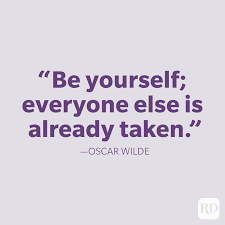

About me
Who am I?
Im someone who is very persuasive about life, know what he wants. I'm organize, hardworking, and detail.
My short-term academic or career.
My career plans is to go to college and while I'm studying I expect to work because I want to have responsibility, know what life is about, and challenge myself to be better and learn many different skills.
My long-term personal & professional ambitions for the future?
To achieve my long-term goal of working for the FBI, I aim to earn a Bachelor's degree and a Master's degree, because the more education you have, the greater your chances of getting a job. In order to get a job at the Federal Bureau of Investigation, I have worked hard to maintain a clean record with the law, in the hope that justice is applied to everyone in this world. It is also my dream to be someone very important. The people who raised me have worked incredibly hard for me, and I want to show them that they didn't waste their time on me. I want to show them that I'm worth the effort and I want to make them proud of me. I am motivated by many things, but one person in particular motivates me most: my mother as she was a police officer in Honduras, a dangerous country where the law is not obeyed. In the face of injustice, my mother stood up and kept fighting. Whenever I see my mother in a police uniform, I get so excited because I see myself as an FBI agent. I would do anything it took to become one because I want it, and it's a job I'll love doing, even though it means that I may put my life at risk, but I know that thousands of lives could be saved.
